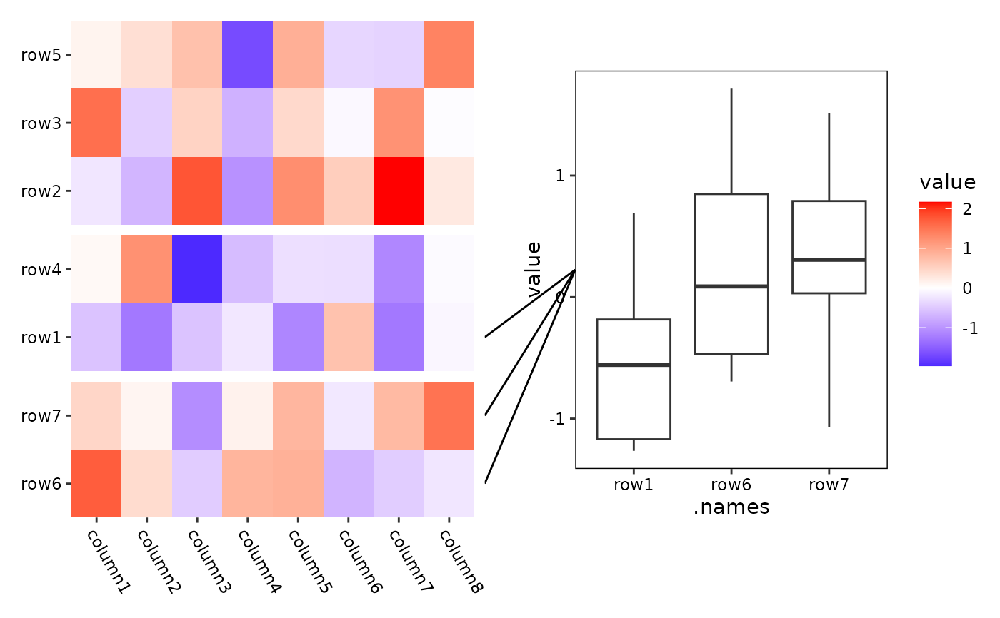
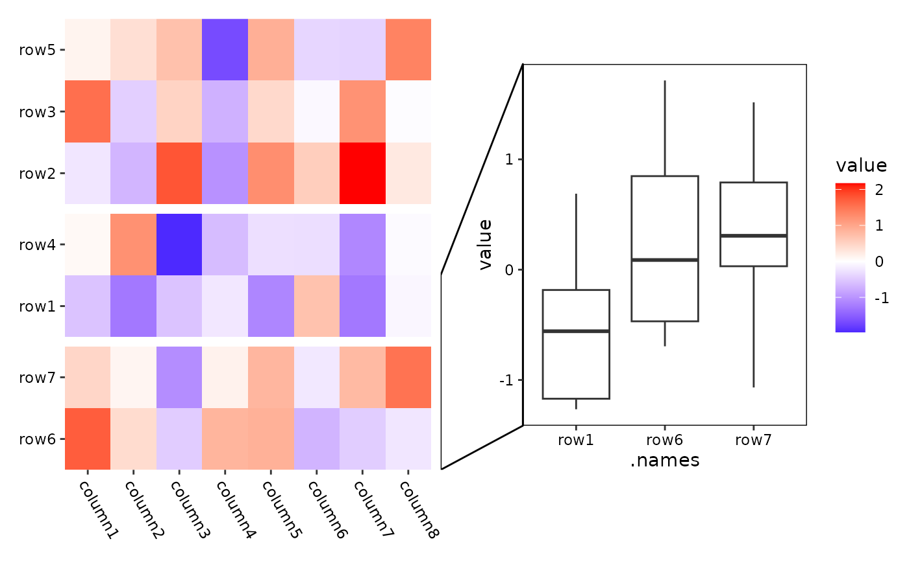

Add a plot to annotate selected observations
Usage
ggmark(
mark,
data = waiver(),
mapping = aes(),
...,
group1 = NULL,
group2 = NULL,
obs_size = 1,
size = NULL,
active = NULL
)Arguments
- mark
A
mark_draw()object to define how to draw the links. Likemark_line(),mark_tetragon(). Note the names of the pair links will be used to define the panel names so must be unique.- data
The following options can be used:
NULL: No data is set.waiver(): Inherits the data from the layout matrix.A
function(including purrr-like lambda syntax): Applied to the layout matrix to transform the data before use. To transform the final plot data, please usescheme_data().A
matrix,data.frame, or atomic vector.
- mapping
Default list of aesthetic mappings to use for plot. If not specified, must be supplied in each layer added to the plot.
- ...
<dyn-dots> Additional arguments passed to
fortify_data_frame().- group1, group2
A single boolean value indicating whether to use the panel group information from the layout as the paired groups. By default, if no specific observations are selected in
mark,ggmark()will automatically connect all observations and group them according to the layout's defined groups.- obs_size
A single numeric value that indicates the size of a single observation, ranging from
(0, 1].- size
The relative size of the plot, can be specified as a
unit(). Note that forcircle_layout(), all size values will be interpreted as relative sizes, as this layout type adjusts based on the available space in the circular arrangement.- active
A
active()object that defines the context settings when added to a layout.
ggplot2 specification
ggmark initializes a ggplot object. The underlying data is created using
fortify_data_frame(). Please refer to it for more details.
In addition, the following columns will be added to the data frame:
.panel: the panel for the aligned axis. It meansx-axisfor vertical stack layout (including top and bottom annotation),y-axisfor horizontal stack layout (including left and right annotation)..names(vec_names()) and.index(vec_size()/NROW()): a character names (only applicable when names exists) and an integer of index of the original data..hand: A factor with levelsc("left", "right")for horizontal stack layouts, orc("top", "bottom")for vertical stack layouts, indicating the position of the linked observations.
Examples
set.seed(123)
small_mat <- matrix(rnorm(56), nrow = 7)
rownames(small_mat) <- paste0("row", seq_len(nrow(small_mat)))
colnames(small_mat) <- paste0("column", seq_len(ncol(small_mat)))
# mark_line
ggheatmap(small_mat) +
theme(axis.text.x = element_text(hjust = 0, angle = -60)) +
anno_right() +
align_kmeans(3L) +
ggmark(mark_line(I(1:3) ~ NULL)) +
geom_boxplot(aes(.names, value)) +
theme(plot.margin = margin(l = 0.1, t = 0.1, unit = "npc"))
#> → heatmap built with `geom_tile()`

# mark_tetragon
ggheatmap(small_mat) +
theme(axis.text.x = element_text(hjust = 0, angle = -60)) +
anno_right() +
align_kmeans(3L) +
ggmark(mark_tetragon(I(1:3) ~ NULL)) +
geom_boxplot(aes(.names, value)) +
theme(plot.margin = margin(l = 0.1, t = 0.1, unit = "npc"))
#> → heatmap built with `geom_tile()`
